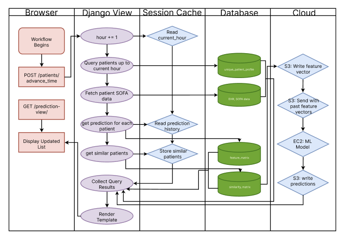
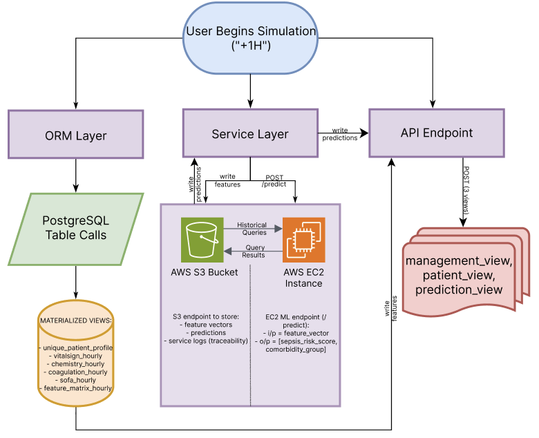
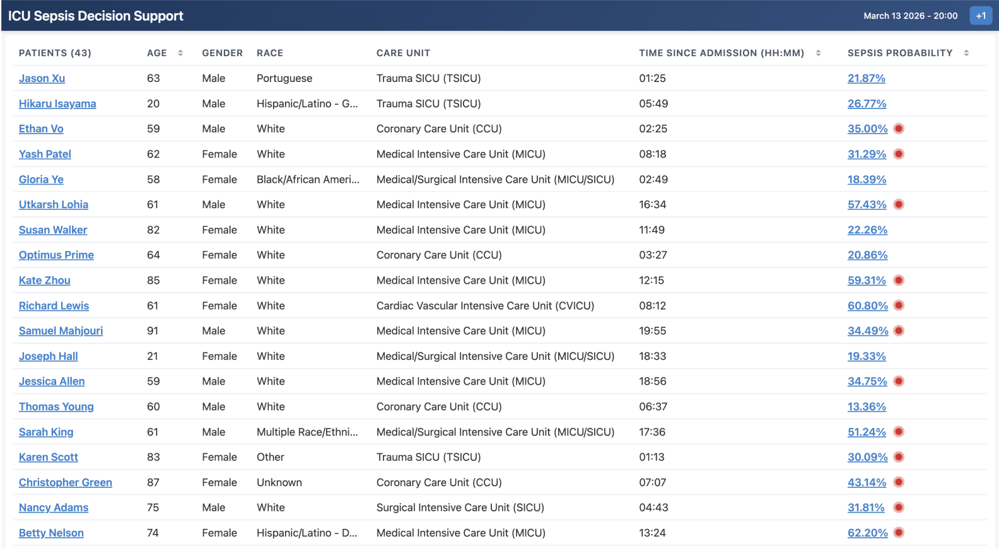
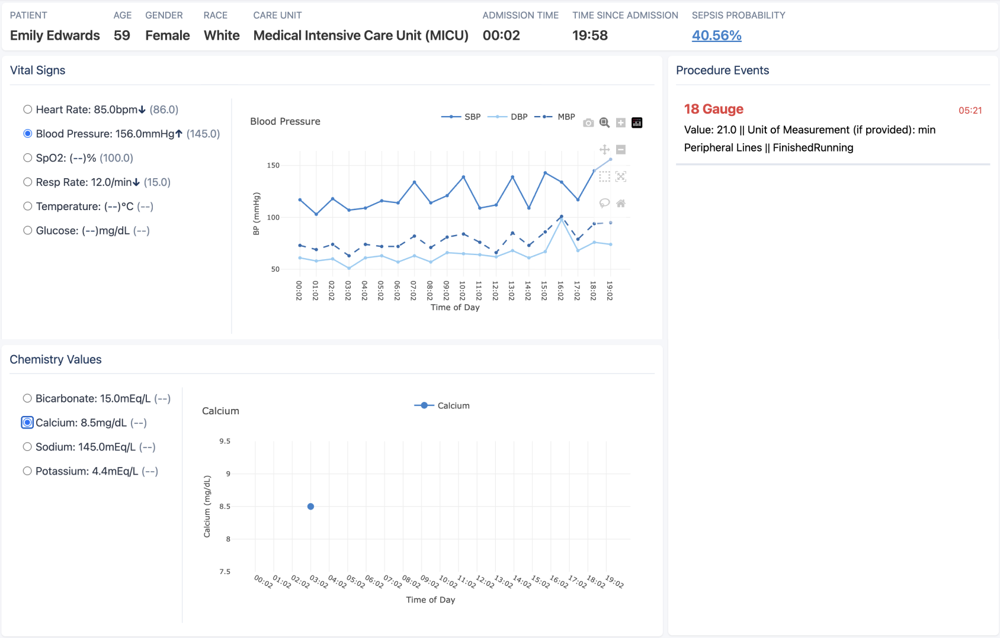
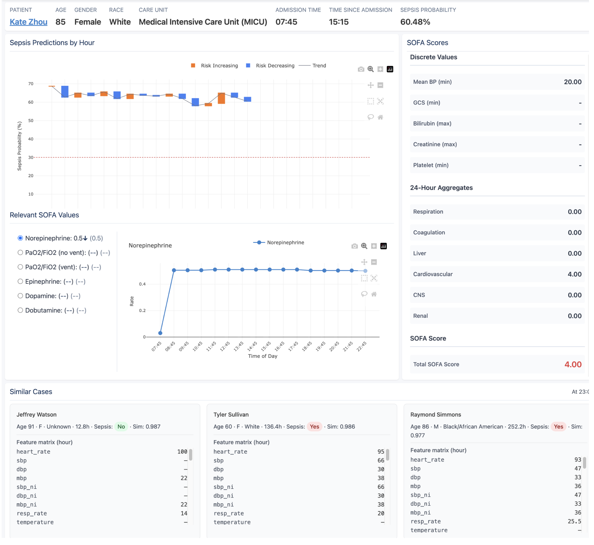

Why Sepsis Matters
Sepsis is the leading cause of death in hospitals, and it's notoriously hard to detect. Early detection saves lives but the tools we have today are not able to provide the level of confidence that clinicians need.
Making sepsis detection transparent, so clinicians can trust the alerts
Try the AppSepsis is the leading cause of death in hospitals, and it's notoriously hard to detect. Early detection saves lives but the tools we have today are not able to provide the level of confidence that clinicians need.
Trust. Clinicians can't see the underlying data that the model uses to make predictions. Since they are unable to see the full picture, they do not have full confidence in the alerts.
False negatives vs. false positives. Sepsis prediction models are excessively tuned to reduce false negatives as missing a patient with sepsis has much more severe consequences. However, ignoring false positives causes an increased number of alerts and, subsequently, clinicians are overwhelmed leading to less trust in the alerts.
We built an interpretable early warning system for adult ICU sepsis risk. It surfaces the reasoning behind each prediction, focuses on trend analysis over 6-hour windows, and lets clinicians see the same data the model uses—vitals and procedures—right alongside the predictions.
We use MIMIC-IV, a research database of de-identified real ICU patients from Beth Israel Deaconess Medical Center in Boston, MA. This allowed us to demonstrate our product using a cohort of patients representative of a real clinical setting.
We use an interpretable model with 6-hour prediction windows and a focus on trend analysis—so clinicians can see how a patient's trajectory drives the risk score, not just a single snapshot.
The app is built with Django and PostgreSQL, styled with Tailwind CSS, and uses Plotly for charts. The ML model will run on AWS; for development we use a stub so we can iterate on the UI and workflow.
We use pseudonymized names and hide internal database IDs (e.g. subject_id, stay_id, hadm_id) so the demo stays appropriate for a public-facing tool.
The prediction dataflow shows how each simulation hour is processed end-to-end: new patient context is read, current-hour features are assembled, model inference runs, and updated risk scores are returned to the management and patient views.
Summary: A repeatable hourly pipeline that transforms ICU patient data into near-real-time, interpretable sepsis risk updates.

Prediction dataflow from MIMIC-IV feature extraction to hourly risk scoring and clinician-facing outputs.
The system architecture separates patient data retrieval, feature processing, model execution, and web presentation. This modular structure improves reliability and makes it easier to evolve the model service without rewriting the clinician-facing app.
Summary: A modular architecture with clear boundaries between data, inference, and interface layers.

System architecture connecting data services, model inference, and clinician-facing dashboards.
A patient list for a simulated ICU day. Each row shows pseudonymized name, age, gender, race, care unit, and admission time. A simulation clock advances hour by hour so you can see how the census and risk evolve. The goal is a quick overview so clinicians can see who needs a closer look.

Unit-level dashboard ranking patients by current sepsis risk so teams can prioritize who needs immediate review.
Vital signs over time—heart rate, blood pressure, SpO2, respiratory rate, temperature, glucose—plus procedure events and the sepsis risk score and comorbidity group. As the simulation advances, you see how predictions update as new data arrives. Everything the model "sees" is visible so clinicians can validate the alerts.

Patient-specific trend view combining vitals, SOFA-related context, and recent events to explain how risk changes over time.
The prediction panel highlights trajectory-based risk changes and links each score to the clinical variables that matter most in that hour. This helps clinicians interpret changes in risk instead of reacting to isolated alerts.

Prediction-focused panel showing hourly sepsis probability with supporting feature context to improve trust in alerts.
We show predictions right next to the underlying data so clinicians can connect the dots. No black box—just the same view the model uses, with the risk and reasoning in plain sight to support trust.
We built an interpretable sepsis early warning system that tackles the trust problem and reduces alarm fatigue by showing clinicians why the model flags a patient and what data it used.
The demo currently uses a stub model. We're moving the full ML pipeline to AWS and will plug it in once it's ready.
See the system in action—run the simulation, open a patient, and watch how risk and vitals evolve together.
Try the App